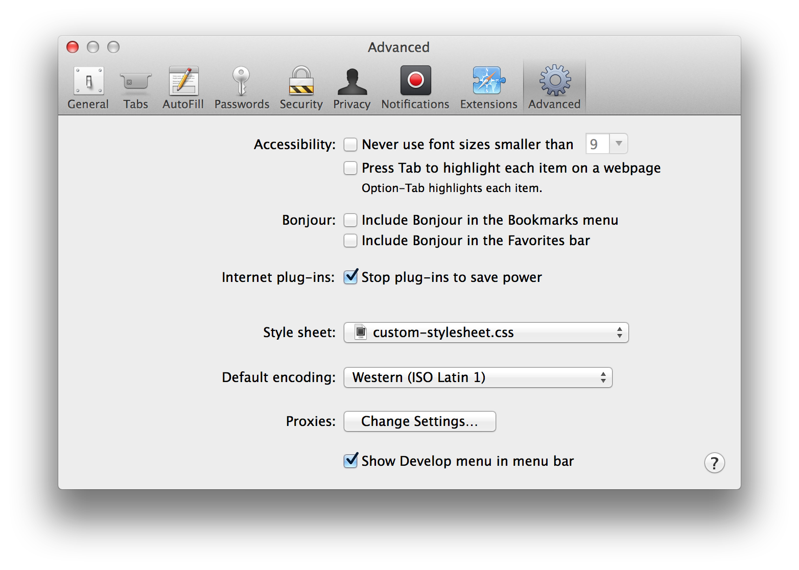
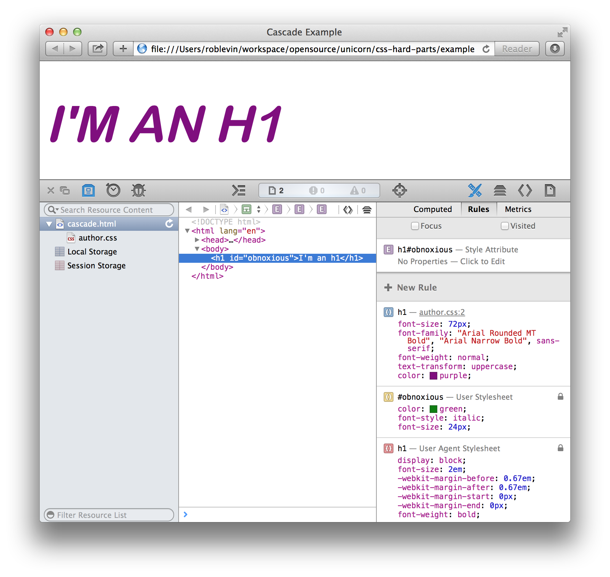
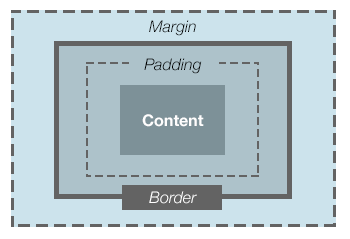

I’ve observed that there are certain areas of CSS that seem to fluster and confuse many developers in our industry. This is an issue because small, medium, and large teams alike, will tend to: * Add technical debt as they write poor CSS code * Miss deadlines because they spend too much time “fighting the DOM” * Stop having fun!
With this in mind, I’ve decided to focus on primarily on–what I’m calling CSS’s hard parts–with the hopes that you’ll be armed with the foundation that will help you to breeze through the next feature you have to code up. Now hard parts is a bit of a misnomer because there are plenty of hard parts we will not be addressing. What I will be focusing on, primarily, are parts of CSS that allow you to: * Create useful components (or modules if you prefer) * Layout pages and sections of pages
These two core tasks are the day-to-day, in the trenches reality of what a front-end developer or designer must tackle to keep pace with that next feature’s technical demands. So what does this mean?
CSS is very hard to understand without lots of live examples and visual aids. We’ll use a combination of the following tools as listed:
We’ll use the online tool, codepen.io for examples that are mainly pedantic in nature, but help to illustrate a concept or a set of concepts.
We’ll also build a small component library as we study the “hard parts” of CSS since: * There’s nothing like real world examples to bring home CSS’s core concepts * It’s always fun to have something useful as an extra benefit of study :)
Admittedly, much of the material we’ll cover is available directly from the specification and, essentially, derivative of that single source of truth. However, my hope is that this content will provide a more accessible coverage of this information and also show how it’s applied in a practical way. All said, we will be heavily referencing the following excellent materials (all of which you should strongly consider adding to your collection of “must-read” materials if you’re really serious about your CSS chops!):
CSS 2.1 Specification The spec is sometimes hard to understand on the first read, but it’s always reliable and definitive.
Eric Meyer’s CSS: The Definitive Guide, Third Edition I think of this text as a sort of annotated and slightly more readable version of the spec (hey, he wrote test specs for CSS itself so he’s gotta know the spec…right?!?!). Having them both available is great for cross-reference.
Russ Weakley’s Slideshare Presentations I’ll be linking to some of my favorites of these Slideshares as they are extremely approachable and visual, while–at the same time–accurate and trustworthy.
Another very useful book that many “CSS wizards” swear by.
TBD .. media box???
This chapter will discuss how the browser determines which style rule(s) to apply to a particular DOM element. The details for how this is done are in the specification on the Cascade.
Before we dive in to the details, let’s attempt to get a broad overview of the four-step process browsers use to determine which rules to apply for a given element:
The term weight is used to describe the priority assigned to competing style rules using the above considerations. Style rules with a higher weight will take precedence over those with a lower weight.
The reason we’re describing the sort ordering process first, is that it’s important to understand the sequence in which weight, specificity, and declaration order are evaluated. First weight, then specificity, and finally order of declaration.
There’s actually another dimension to this. If we have elements that don’t have any styles applied directly to them, there’s still the case that those elements may “inherit” styles from their ancestors. Further, style properties have initial default values to consider. We’ll cover those details in a bit.
Now that we’ve discussed the browser’s overall strategy for sorting style rules, let’s look at origin, specificity, and inheritance in more detail.
There are three types of stylesheets that a browser must consider when sorting in ascending orders of precendence:
The user agent stylesheet sets up a browser’s default styles. Note that each browser has its own stylesheet so Chrome’s default style will be a bit different than say Firefox’s.
User’s can define their own stylesheets to override the browser’s default stylesheet. As such, the user stylesheet is given more weight than the browser’s stylesheet.
Page authors get the highest precedence and their stylesheets will override both the user agent and user stylesheets (with the earlier caveat that any rule with !important from the user stylesheet will override all other rules providing for accessibility concerns).
The type of stylesheet that is being considered–user agent, user, or author–determines the stylesheet origin.
As noted from the sorting process described earlier, the browser will prioritize rules with more weight before considering specificity. This is rarely an issue to page authors since an author stylesheet generally gets the most weight anyway (ignoring, of course, the user stylesheet !important special case). However, it’s worth noting that it’s possible for specificity to be completely ignored when origin and/or importance are not the same. Consider a page that includes a simple author stylesheet like so:
<!DOCTYPE html>
<html lang="en">
<head>
<meta charset=utf-8>
<title>Cascade Example</title>
<link rel="stylesheet" type="text/css" href="author.css">
</head>
<body>
<h1 id="obnoxious">I'm an h1</h1>
</body>
</html>/* AUTHOR STYLESHEET */
h1 {
font-size: 72px;
font-family: "Arial Rounded MT Bold", "Arial Narrow Bold", sans-serif;
font-weight: normal;
text-transform: uppercase;
color: purple;
}Now consider a user stylesheet that is added as a preference:
/* USER STYLESHEET */
#obnoxious {
color: green;
font-style: italic;
font-size: 24px;
}We haven’t yet discussed the rules for specificity, but an ID selector (like #obnoxious), is much more specific than an element selector (like the h1 defined in the author stylesheet above). Intuitively, you may think that the #obnoxious rule would “win the battle” since it’s more specific. However, in fact, the less specific h1 rule from the author stylesheet will get used since the sorting process prefers origin over specificity. Let’s take a look at this example a bit more visually.
First we add our custom user stylesheet via Safari’s preferences:

When we open our test page in Safari we clearly see that the author style rules override any conflicting user style rules:

We glean the following from this example:
font-style is not defined in the author stylesheet so the italic defined by the user gets usedcolor is defined in both but the author’s purple gets used given the origin principlefont-size–the author’s 72px value is usedfont-weight is used in two stylesheets–the user agent defines it as bold while the author defines it as normal. It’s a bit hard to see that the weight is normal since it’s a heavy font (you’ll have to trust me). Nevertheless, the author’s rule wins that battle as wellThis example clearly illustrates that, although it’s rarely an issue to page authors since their stylesheet is the most weighty, origin is considered over specificity.
There are a few ways that styles rules will get applied. The most obvious is an explicit rule gets defined such directly such as:
h1.gaudy {
color: hotpink;
}With this definition, we are directly applying the color hotpink to any level one header with the class gaudy. This is a cascading style–simple enough. There are a couple of more subtle ways that a style rule may get applied such as inheritance and initial value. Let’s look at those next.
According to the spec:
When inheritance occurs, elements inherit computed values. The computed value from the parent element becomes both the specified value and the computed value on the child.
Inheritance happens when descendent elements take on the styles defined by an ancestor element. In the following example, the paragraph element will inherit the font family defined in its parent element .outer since font-family is an inherited property:
<style>
.outer {
font-family: sans-serif;
}
</style>
<div class="outer">
<p>I will be a san-serif</p>
</div>Note that some types of CSS properties are inherited, others are not. See this table, but, for example, color is an inherited property, while display and border are not. These rules tend to make intuitive sense–if borders were inherited, it would be a big issue; you’d end up with a maze of borders for elements that have children!
In terms of precedence, inheritance comes after cascading values, but before initial values.
Sitepoint provides an overview of how initial values work:
The default value for a property, when it’s not specified explicitly or inherited, is called the initial value. The initial value of each property is defined in the CSS specification.
Browsers have user agent style sheets that define the default rendering of the various HTML element types. In some cases, the rules in those built-in style sheets define values other than the initial values from the CSS specification. For example, links are usually underlined, even though the initial value for the text-decoration property is none.
Another example of initial value is border-color, which will get a default of the currentColor (essentially, the current value of the color property). Initial value comes after cascading and inherited values in terms of precedence.
The browser has to work out the details of how cascaded, inherited, and initial style values are applied to any given element. Let’s examine how that process works next.
Once the browser has constructed a document tree–a tree-based hierarchy of elements representing the source document–it needs to take any specified values and resolve them to computed values (for example, em units are converted to pixels and URIs are made absolute), and then finally resolve those computed values to used values and then actual values. A used value might be the result of evaluating a rule like: width: 75%. Obviously, determining what that percentage width is calculating from has to happen at run-time. The actual value is the value that the browser actually uses when it renders the page. An example from the spec is:
the user agent may be forced to use only black and white shades instead of full color
The details of this process are defined in the spec on value-stages.
As CSS authors, we have the most control over specified values so let’s focus our attention on how those get evaluated:
6.1.1 Specified values
User agents must first assign a specified value to each property based on the following mechanisms (in order of precedence):
If the cascade results in a value, use it. Otherwise, if the property is inherited and the element is not the root of the document tree, use the computed value of the parent element. Otherwise use the property’s initial value. The initial value of each property is indicated in the property’s definition.
So, the cascade is still the first and foremost consideration, but now we start to look at cases where no direct style rule has been defined for a particular element. In such cases, inheritance and inital values will be considered. You’re probably asking yourself, “What is this inheritance thing, and what’s a property’s initial value? Let’s look at those now.
We’ve delved pretty deep into the details of the Cascade. Let’s try not to get too overwhelmed by these details and recap the most important bits:
Whew!
I’ve shown you earlier that origin is considered before specificity, but I have a confession to make…page authors generally only need to worry about specificity since, as stated, the author stylesheet gets the most weight.
In order to determine how two or more conflicting style rules will get resolved (providing they have the same weight), the browser uses a sort of “scoring system” called specificity. The main idea is that rules with a higher specificity will take precedence over those with a lower specificity.
Specificity is calculated as a four digit comma delimited number where each number can be labeled from left to right as: ‘a’, ‘b’, ‘c’, ‘d’.
To gather the total specificity we simply concatenate those four numbers. Here are some examples straight from the spec:
* {} /* a=0 b=0 c=0 d=0 -> specificity = 0,0,0,0 */
li {} /* a=0 b=0 c=0 d=1 -> specificity = 0,0,0,1 */
li:first-line {} /* a=0 b=0 c=0 d=2 -> specificity = 0,0,0,2 */
ul li {} /* a=0 b=0 c=0 d=2 -> specificity = 0,0,0,2 */
ul ol+li {} /* a=0 b=0 c=0 d=3 -> specificity = 0,0,0,3 */
h1 + *[rel=up]{} /* a=0 b=0 c=1 d=1 -> specificity = 0,0,1,1 */
ul ol li.red {} /* a=0 b=0 c=1 d=3 -> specificity = 0,0,1,3 */
li.red.level {} /* a=0 b=0 c=2 d=1 -> specificity = 0,0,2,1 */
#x34y {} /* a=0 b=1 c=0 d=0 -> specificity = 0,1,0,0 */
style="" /* a=1 b=0 c=0 d=0 -> specificity = 1,0,0,0 */Let’s take a look at a few more examples from within a simple html page:
<head>
<style type="text/css">
body { color: blue; }
#abc { color: red; }
</style>
</head>
<body>
<p id="abc">I have and ID so I will render red</p>
<h1 style="color: green">I have an inline style and render green</h1>
</body>In this example, we have two defined style rules for body and #abc. The body rule has a specificity of 0001 and the #abc has a specificity of 0100. The ID clearly “wins”. The h1 has an inline style and will thus calculate to 1000.
Let’s look at one more fairly complex selector:
#foo > #bar ul.klass li p:first-line {}
/* a=0 b=2 c=1 d=4 -> specificity = 0,2,1,4 */style so a=0#foo and #bar so b=2.klass so c=1ul, li, and p, as well as one pseudo-element :first-line so d=4Selector syntax is out of the scope for this book, but you can find the general rules for selectors here.
In his tome on CSS, CSS: The Definitive Guide, 3rd Edition, Eric Meyer points out that inherited values have absolutely no specificity at all–yes, that’s less than zero specificity–so an inherited rule will lose to a rule defined by the universal selector:
<style>
* {
color: green;
}
.outer {
color: blue;
}
</style>
<div class="outer">
<p>I will be green</p>
</div>The takeaway is that inherited rules have no specificity regardless of how specific the rule is when applied to the original ancester element.
Worrying about selector performance is generally a futile effort, but, if you agree that deep selectors are detrimental anyway, you’ll be happy to learn that browsers parse CSS from right to left where the rightmost selector, called the key, is first considered before those to the left of it. You’ll likely benefit much more from removing unused rules, than from trying to hand optimize the depth of selectors, but, you should adopt a coding style such as smacss or oocss that prevents this in the first place.
As mentioned earlier, the first step in evaluating the cascade, is to gather all relevent rules that apply for the current medium. This can be a factor when you’re web site or application targets more than one medium. We’ll take on print as that’s a common use case.
When a user elects to print one of your web pages, the current medium will be print. When this happens, it’s preferable to only have to deal with one print stylesheet. However, if you’ve set your most general stylesheets to apply to all media (e.g. medial="all") your print stylesheet will have to “fight” against the more general stylesheets to win the specificity battle. You might instead want to target the media type of screen for your general stylesheets to avoid this. Generally, if you see a ton of !important values in the print stylesheet, it’s a code smell that indicates the misuse of media="all".
Eric Meyer provides a wonderful trick for debugging stylesheets in his book Smashing CSS: Professional Techniques for Modern Layout. Essentially, you turn off the general stylesheets, by purposely setting the media type to something other than all or screen. Then, you set your print stylesheet to screen. Once that’s done, you should be able to load your site in a normal browser–which is the screen medium–and have access to all your favorite developer tools as well as frequent page reloading. Here’s an example of setting up such an approach:
<link rel="stylesheet" type="text/css" href="styles.css" media="tv">
<link rel="stylesheet" type="text/css" href="print.css" media="screen">Once you’ve got your print styles looking the way you want, you’d simply switch styles.css to point to media="screen", and print.css to point to media="print". Neat trick, huh!
CSS: The Definitive Guide, 3rd Edition
Smashing CSS: Professional Techniques for Modern Layout
If you’d like a visual presentation of how the cascade rules are applied you may want to check out Russ Weakley’s excellent CSS Cascade Slideshare chock full of extremely useful examples.
This chapter will discuss CSS’s main weapon of choice, boxes. The CSS box model defines how rectangular boxes are to be laid on in your document. As always, I encourage you to cross-reference the details in the box-model specification, and the visual formatting model specification.
Let’s review of the CSS box model:

Taking the example diagram from the inside out we have:
The edges of the above described sections of the box can be further broken down in to top, right, bottom, and left. We can thus describe the top outermost area of content just before the padding starts as the top content edge. Similarly, we might describe the bottom-most padding area just before the border as the bottom padding edge.
Edges can be shared as per the specification, starting with the padding edge:
If the padding has 0 width, the padding edge is the same as the content edge
Same for borders:
If the border has 0 width, the border edge is the same as the padding edge
And for margins:
If the margin has 0 width, the margin edge is the same as the border edge
The content and padding background are specified by the containing block’s background property (and, additionally, any of its children’s background properties). Margins are transparent.
We’ll delve deeper in to how the width of a box is calculated, but, for now, let’s take the simplest case that width–in the most simplest cases–is determined by adding up the components of the box model:
Left margin + left border + left padding + content + right padding + right border + right margin = width
Margins can be set for all four sides with the caveat that vertical margins will not effect non-replaced inline elements (such as images).
Margins can be set with either of: auto (which we’ll discuss in a later section), length, or percentage.
Margins set with length are fairly straight forward as you specify a fixed value such as margin: 5px;
Margins set with percentage are bit trickier starting with this fact from the spec:
The percentage is calculated with respect to the width of the generated box’s containing block. Note that this is true for ‘margin-top’ and ‘margin-bottom’ as well.…
The takeaway is to be careful if you use margin-top or margin-bottom with a percentage since that percentage is relative to the containing block’s width (not it’s height).
When thinking about horizontal formatting an obvious question is “How is an element’s width calculated?”. Let’s start there.
http://codepen.io/roblevin/pen/gmsIx
A particular block-level boxes width must add up to its containing block’s “content edge”. Therefore, if a containing block as a width of 80 pixels and the padding on the sides adds up to 20 pixels (provided there’s no margin or borders), its width is 100 pixels. Thus a child block-level element’s width will be 100 pixels per the spec:
‘margin-left’ + ‘border-left-width’ + ‘padding-left’ + ‘width’ + ‘padding-right’ + ‘border-right-width’ + ‘margin-right’ = width of containing block
If the spec isn’t clear enough we can refer to the following from Eric Meyer:
For an element in the normal, Western-style flow of text, the containing block is formed by the content edge of the nearest block-level, table-cell, or inline-block anscestor box.
TODO PROVIDE IMAGE HERE
Generally, a horizontal property having a value of auto will result in that property being calculated to be whatever is required to comply with the rule stated above (that block-level boxes add up to their containing block’s width).
For example, let’s say we have code specified as follows:
<div><p>This is a paragraph</p></div>div {
width: 800px;
}
p {
margin-left: auto;
margin-right: 200px;
width: 200px;
}Note that our paragraph is defined with a left margin of auto, and a width & right margin to 200px, while the containing block is defined at 800 pixels wide. Since the content edge of this containing block is 800 pixels wide, the margin-left will need to be 400 pixels to comply with the width rule we’ve stated above.
TODO PROVIDE IMAGE HERE
If a child-block’s total specified values do not “add up” to the expected containing block width, then the difference will be made up on the right margin (provided the directionality is left-to-right; if not, the rule is flipped and the margin-left will make up the difference).
TODO PROVIDE IMAGE HERE ML 200px + Content 200px + MR 200px (MR will == 400px)
You might already know this, but if you set the block-level child element’s margin to the same values such as: margin-left: 200px; margin-right 200px, and then set the width: width: auto;, the element will be horizontally centered.
You can also center by setting the margin: margin: 0 auto where the natural content width will be used and then the left and right margins will be calculated equally to center the element.
TBD
http://codepen.io/roblevin/pen/szavA?editors=110
http://www.w3.org/TR/CSS2/box.html#collapsing-margins
http://codepen.io/roblevin/pen/Dnxbq?editors=110